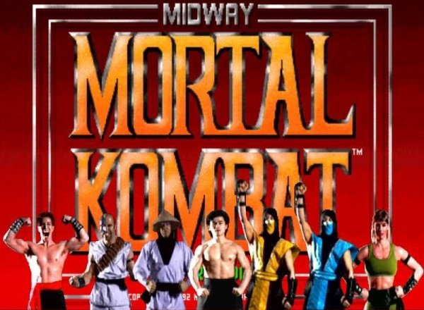
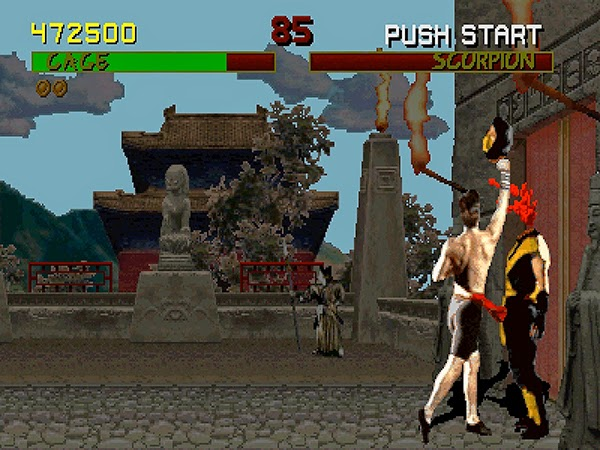
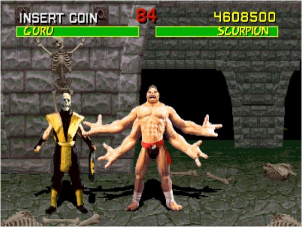
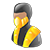
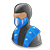
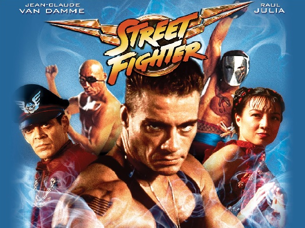
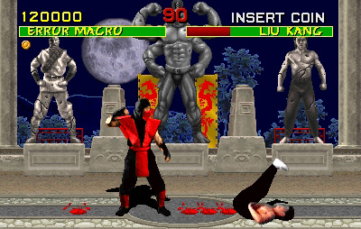
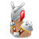

Mortal Kombat 1
| Produtora | Warner Bros. Interactive Entertainment |
| Editora | Midway Games |
| Data Lançamento | 1992 |
| Gênero | Jogo de luta |
| Modo de Jogo | Singleplayer, Multiplayer |
| Classificação | +18 |
Mortal Kombat é o primeiro título da série de jogos de luta de mesmo nome lançado nos arcades em 1992, desenvolvido e publicado pela Midway Games. Posteriormente, várias versões do jogo para diversos consoles foram lançadas pela Acclaim Entertainment.
O jogo introduziu muitos aspectos-chave da série Mortal Kombat, incluindo o esquema de controle único de cinco botões e movimentos de finalização sangrentos. O jogo centra-se na jornada do monge Liu Kang para salvar a Terra do mal do feiticeiro Shang Tsung, terminando com seu confronto no torneio conhecido como Mortal Kombat. Mortal Kombat tornou-se um jogo best-seller e continua a ser um dos jogos de luta mais populares da história do gênero, gerando inúmeras sequências e spin-offs ao decorrer dos anos anos e décadas, começando com Mortal Kombat II, em 1993, e, juntamente com a primeira sequência houve uma sucedida adaptação cinematográfica em 1995. No entanto, também provocou muitas controvérsias por sua representação de violência extrema e escornar usando gráficos realistas digitalizados, resultando na introdução de avaliações específicas por idade descritas no conteúdo para jogos de vídeo.
Jogabilidade.
Mortal Kombat é um jogo de luta em que os jogadores batalhavam entre si em partidas. O lutador que drenar completamente barra de saúde do oponente primeiro ganha a rodada, e o primeiro a ganhar dois rounds ganha a luta. Cada rodada é cronometrada; se ambos os lutadores ainda conter saúde restando quando o tempo se esgotar, aquele com mais saúde ganha a rodada.
Os jogadores selecionam um dos sete personagens disponíveis. Considerando outros jogos de luta na época que apresentavam diferenças consideráveis em vários aspectos entre os personagens, tais como: velocidade, altura, ataques, força, saltos e outros, entretanto, os personagens jogáveis em Mortal Kombat são praticamente idênticos uns aos outros com apenas diferenças mínimas em sua faixa de alcance e velocidade de seus movimentos. O jogo também distinguiu-se de outros jogos de luta da época com o seu esquema de controle único. Os controles consistem em cinco botões dispostos em um padrão de "X": dois botões para socos, baixos e altos e dois botões para pontapés além de um botão centralizado para bloqueio, bem como um joystick de oito vias. Os ataques podem variar dependendo da distância do oponente. Todos os personagens dos jogadores têm um conjunto compartilhado de ataques realizados mantendo o joystick em várias direções, como a varredura de perna e um uppercut; este último ataque consiste em bater no inimigo lançando ele para alto causando uma grande quantidade de danos.
Mortal Kombat também contou com maneiras originais em que ser realizar movimentos especiais. Foi o primeiro jogo a introduzir movimentos especiais realizados exclusivamente usando o joystick. A maioria dos movimentos especiais são realizados tocando no joystick, algumas vezes, terminando pressionando um botão. Ao contrário de jogos de luta anteriores, alguns movimentos necessita de um movimento circular no joystick. Co-criador Ed Boon mais tarde disse, "Desde o início, uma das coisas que nos separa de outros jogos de luta são os loucos movimentos que colocamos nesse, como bolas de fogo e toda os movimentos mágicos, por assim dizer. Outra das inovações do jogo foi o Fatality, um movimento de encerramento executado contra os adversários derrotados para matá-los de uma forma horrível.
O torneio.
O torneio era uma forma de conquista legítima entre reinos e realidades paralelas, criado pelos Deuses Anciãos. Como a Terra era a próxima a ser conquistada, era preciso que o representante oficial da exoterra vencesse 10 vitórias consecutivas. Nesse caso, a Terra já havia perdido 9 sendo este Mortal Kombat o último para que o feiticeiro Shang Tsung e seu Imperador conquistassem o planeta.
História.
O torneio Shaolin de artes marciais foi por muito tempo uma competição de honra e glória. Guerreiros de todas as partes do mundo eram convidados a participar. Shang Tsung era um desses guerreiros. Quando ele entrou no torneio imediatamente ganhou o título de Grande Campeão. Mas sem o conhecimento do Monge Shaolin que era o anfitrião do torneio, cada vitória de Shang Tsung lhe dava um poder sombrio e destrutivo. Shang Tsung era amaldiçoado por seus deuses e para agrada-los precisava não somente tirar a vida do oponente, mas também a sua alma.
Através desse ritual Shang Tsung pôde manter sua juventude. Até a chegada de Kung Lao, um poderoso e nobre guerreiro Shaolin. Sua força e velocidade provaram ser muito para o confiante Shang Tsung. Kung Lao ganhou a luta e o título de Grande Campeão que Shang Tsung tão desesperadamente possuía. Anos depois, depois da misteriosa morte de um dos três Grand-master, Shang Tsung retornou, misteriosamente envelhecido e enfraquecido por fracassar em agradar seus deuses. Shang Tsung trouxe Goro. Sua velocidade e força eram incríveis. Ele enfrentou Kung Lao, mas, apesar de Kung Lao lutar bravamente Goro provou ser melhor e o derrotou. Para esse torneio antigo sua vitória marcou o fim de uma era...
Agora, 500 anos se passaram depois da vitória de Goro contra o grande Kung Lao, Goro já acumulou nove vitórias seguidas faltando apenas uma vitória para Shang Tsung conquistar o reino da terra e entregar a humanidade como prêmio ao seu Imperador.
Para isso, o Templo da Ordem da Luz treinou desde criança o monge Liu Kang. O grande lutador cresceu acreditando que era a esperança de salvação da Terra. Seu grandmaster Bo'Rai Cho o ensinou nas melhores práticas das artes marciais. Tendo a alma protegida pelo lendário deus do trovão, Raiden, Liu Kang aguarda para se encontrar com o poderoso guerreiro e feiticeiro Shang Tsung e, assim, conseguir salvar a Terra neste último torneio.
Pouco tempo antes do torneio, a tenente das Forças Especiais dos EUA é levada a investigar o paradeiro do líder mercenário Kano. Descobre que ele foi convidado a particiar de um remoto torneio shaolin em uma distante ilha. Motivada pela justiça - ou seria vingança? Sonya parte sozinha para o Mortal Kombat sem saber que, na verdade, era uma emboscada do próprio Tsung.
Ainda na América, o agente do ator de filmes de ação Johnny Cage recebe um misterioso convite para que seu cliente participe de um torneio shaolin em uma ilha. Crendo na possibilidade de aumentar sua popularidade, que já estava negativa, Cage aceita o convite feito pelo próprio Shang Tsung em troca de visibilidade caso se tornasse o grande campeão. Desprovido das verdadeiras intenções do feiticeiro, Cage mal sabia que na verdade suas chances de sair vivo da ilha eram nulas.
Utilizando ao seu favor uma rixa antiga entre os clãs de Hanzo Hasashi e Bi Han, Shang Tsung promete entregar Sub-Zero a Scorpion caso ele o ajudasse a derrotar a Terra no Mortal Kombat. Por outro lado, Tsung faz a mesma promessa para Sub-Zero, porém, de matar Scorpion e mostrar a verdadeira força dos Lin Kuei.
Curiosidades.
Os personagens do jogo são atores reais digitalizados, aqui está o nome desses atores e o personagem que fazem em MK1. Alguns deles repetem nos MK seguintes:
- Richard Divizio: Kano
- Malecki: Sonya Blade
- Sung Pak: Liu Kang, Shang Tsung
- Carlos Pesina: Raiden
- Daniel Pesina: Sub-Zero, Scorpion, Reptile, Johnny Cage
- Elizabeth Malecki: Sonya Blade
- Ho Sung Pak: Liu Kang, Shang Tsung
- Carlos Pesina: Raiden
- Daniel Pesina: Sub-Zero, Scorpion, Reptile, Johnny Cage
John Vogel, um dos criadores da saga MK, ficou disfarçado de um guarda de Shang Tsung para ser incluído na fase "The Courtyard".
Os nomes dos personagens de MK são muito diferentes do que eles iriam ser inicialmente: Trom foi um nome que Dave Michicich pensou para algum personagem de MK, Ed Boon e John Tobias estiveram rindo um bocado com isso. Johnny Cage era Michael Grimm, Sub-Zero era originalmente Tundra, Shang Tsung se chamava Shang Lao e Liu Kang era Yoshitsune Minamoto.
Inicialmente o jogo (e o personagem Johnny Cage) seria baseado no ator Jean-Claude Van Damme, mas por motivo da falta de tempo do ator isso não foi possível. Ironicamente, Van Damme foi o ator principal do filme Street Fighter baseado no jogo de mesmo nome e concorrente direto do Mortal Kombat).
Em uma das primeiras versões do jogo para arcade, acontecia um erro na máquina em que fazia com que as cores de dois personagens se juntassem; isso geralmente ocorria com o Sub-Zero e Scorpion, criando, então, um ninja vermelho com o nome de Ermac (abreviatura de "error macro"). Os jogadores achavam que tinham descoberto um novo personagem secreto, mas não passava de um erro do jogo.
Raiden, o Deus do Trovão, é baseado na mitologia japonesa, porém nela Raiden é um deus-demônio com dentes afiados, cabelos longos e com um tambor para fazer os trovões. A figura de Raiden foi baseado no filme Os Aventureiros Do Bairro Proibido(en:Big Trouble In Little China, 1986), onde aparece o Deus do Trovão. Raiden, em japonês, quer dizer "trovão e raios". Em quase todos os jogos a grafia e a pronúncia de Raiden aparece como "Raiden".
Fatalitys.
- SubZero
- Sonya
- Scorpion
- Liu Kang
- Johnny Cage
- Raiden
- Kano
-  Goro
- Shang Tsung
-
 Reptile
Reptile - Ermac (Não Comprovado)